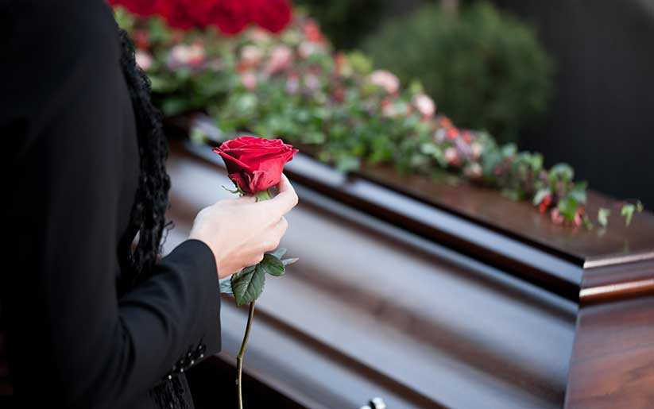

"MAGNITUD DEL TRASTORNO DE ESTRÉS POSTRAUMÁTICO"
La muerte inesperada de 59.1% y en 68.9% para la muerte esperada son los porcentajes del estrés postraumático
Cerca de 5.2 millones de adultos sufren de trastorno de estrés postraumatico al año. Esta cantidad de personas es solo una pequeña parte de aquellas que han pasado por un trauma.
Las mujeres son más propensas que los hombres a desarrollar trastorno de estrés postraumático. Alrededor del 10% de las mujeres desarrollan trastorno de estrés postraumático en algún momento de sus vidas.
"FACTORES QUE PONEN A UNA PERSONA EN RIESGO DE TENER ESTE TRASTORNO"
Tener antecedentes de enfermedades mentales
Sufrir estrés adicional después de algún evento, como la pérdida de un ser querido, dolor, etc.
Tener poco o ningún apoyo social.
Haber tenido traumas en la infancia.
